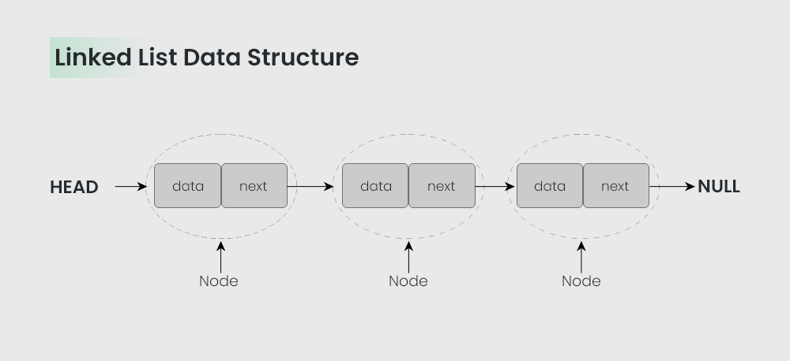

A linked list is a linear data structure, in which the elements are not stored at contiguous memory locations. The elements in a linked list are linked using pointers as shown in the below image:
A node is the fundamental building block of a linked list. It contains the data and a reference (link or pointer) to the next node in the sequence. The last node in the list typically points to null, indicating the end of the list.
In a singly linked list, each node points to the next node in the sequence. It forms a unidirectional sequence.
In a doubly linked list, each node has references to both the next and the previous nodes in the sequence. This bidirectional linkage allows traversal in both directions.
The head is the first node in a linked list. It serves as the starting point for traversing the list.
The tail is the last node in a linked list. The node at the tail points to null, indicating the end of the list.